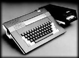

La Scene ORIC

Suite à la présentation de ma démo ORIC, à la Volcanic 4, on m'a demandé de faire une petite présentation de la scène démo sur ORIC, ainsi qu'une explication sur les capacités de la machine, bref de vous briefer sur Oric en 1998...Présentation
Mon premier ordinateur à été un Oric Atmos. J'avais déja
 utilisé des ZX81
dans le club micro de mon quartier, mais l'Atmos est mon premier ordi,
acheté avec mes économies de l'année... A cette époque, le C64 était à
4000fr, l'Apple II à plus de 10000fr... Et l'Oric coutait moins de 3000fr,
pour un ordinateur couleur, avec un mode haute résolution graphique, du son,
un vrai clavier mécanique. Le bonheur quoi !
J'ai appris le basic, commencé l'assembleur (tout en datas), acheté des
extensions (imprimante, synthétiseur vocal, tablette graphique,
joystick,...). Finalement, je l'ai revendu pour m'acheter un Atari 520 STF.
Sur ST, j'ai intégré le groupe NeXT qui à sorti la Phaleon Demo en 1992. Mon
pseudo (handle ?) est Dbug. Certain s'en souviennent peut-être encore :).
utilisé des ZX81
dans le club micro de mon quartier, mais l'Atmos est mon premier ordi,
acheté avec mes économies de l'année... A cette époque, le C64 était à
4000fr, l'Apple II à plus de 10000fr... Et l'Oric coutait moins de 3000fr,
pour un ordinateur couleur, avec un mode haute résolution graphique, du son,
un vrai clavier mécanique. Le bonheur quoi !
J'ai appris le basic, commencé l'assembleur (tout en datas), acheté des
extensions (imprimante, synthétiseur vocal, tablette graphique,
joystick,...). Finalement, je l'ai revendu pour m'acheter un Atari 520 STF.
Sur ST, j'ai intégré le groupe NeXT qui à sorti la Phaleon Demo en 1992. Mon
pseudo (handle ?) est Dbug. Certain s'en souviennent peut-être encore :).
J'ai redécouvert l'Oric en 1996, alors que je bossais chez Adeline Software (Little Big Adventure, Time Commando) en tant que programmeur PlayStation. J'ai downloadé l'émulateur, essayé les jeux. La passion est revenu. Après 1 heure sur "Defence Force" (un defender like), je suis revenu sur le net. J'ai découvert le WEB ORIC. Plein de gens encore actifs, un club français (ClubEuropeOric), un club anglais (OricUserMontly), 2 fanzines, des pages completes sur le hardware, des jeux en download, des kits de developement en C et en asm (cross compilation), et des tas de projet en cours (interface IDE, nouvelles versions du DOS, compilateurs Forth et Lisp, nouveaux jeux, etc,...). A ce moment, j'ai décidé de me remettre à coder sur Oric. J'ai commencé un Dungeon Master, et là, je me suis rendu compte que finalement c'était facile de coder avec un Cross-Compiler et un émulateur ! J'ai donc commencé à faire des effets de demo...
La scene ORIC
Pour cela, j'avais besoin de doc. J'ai commencé à demander à gauche et à droite. J'ai finalement récupéré des livres de prog 6502 sur Apple 2, le manuel Basic de l'Atmos, des photocopies de la doc constructeur du VIA6522 (le controleur d'interruptions, et I/O). J'ai échangé une boite de "TimeCommando" PC contre un Oric 1, et acheté un Téléstrat (ou Stratos en british) pour 250fr. Je suis parti de mes sources ST pour faire toute le partie sonore. J'ai repris les tables de conversion de mon replay de digit pour jouer des samples avec le YM. Ca marche. Frequence maximale, 8khz, en mono joué sur les 3 caneaux pour une qualité maximale. Il reste 13 nops inutilisés... et le tout en virant les interruptions...
Pour le reste, tout est dans la démo présentée à la Wild Compo de la Volcanic 4. Je compte bien continuer, et trouver de nouveaux effets faisables avec le hardware limité de l'Oric !
 Pour l'instant, la scène Oric, c'est moi... vu que "Just Oric" est la
premère démo sur cette machine. (Exception faite de la cassette de
démonstration livrée avec la machine, que j'ai longtemps considéré comme le
meilleur soft jamais fait sur cette machine !).
Mais ca va grossir ! Un certain "Twilite" (Jonathan Bristow), un anglais,
fait des choses allucinantes avec son oric. Il fait tout en natif. Il a son
Atmos, ses 4 lecteurs de disquette (3", 3"1/2, et 5"1/4). Avec ça, monsieur
ce permet de programmer un éditeur de musique soundchip, un soundtracker 3
voies... Il est vraiment dingue. Mais c'est une brute. Il maitrise les
limitations graphiques, ainsi que les changements de mode video. Il arrive a
faire des trucs allucinants.
Si tout va bien (si j'arrive a réparer mon controleur de disque), les
prochaines démos auront des musiques originales, voir peut-être même de la
musique soundtrack. J'espère pouvoir faire de la 3D, peut être même des
effets bitmaps. En tout cas, je vais essayer d'améliorer le design et les
transitions !
Pour l'instant, la scène Oric, c'est moi... vu que "Just Oric" est la
premère démo sur cette machine. (Exception faite de la cassette de
démonstration livrée avec la machine, que j'ai longtemps considéré comme le
meilleur soft jamais fait sur cette machine !).
Mais ca va grossir ! Un certain "Twilite" (Jonathan Bristow), un anglais,
fait des choses allucinantes avec son oric. Il fait tout en natif. Il a son
Atmos, ses 4 lecteurs de disquette (3", 3"1/2, et 5"1/4). Avec ça, monsieur
ce permet de programmer un éditeur de musique soundchip, un soundtracker 3
voies... Il est vraiment dingue. Mais c'est une brute. Il maitrise les
limitations graphiques, ainsi que les changements de mode video. Il arrive a
faire des trucs allucinants.
Si tout va bien (si j'arrive a réparer mon controleur de disque), les
prochaines démos auront des musiques originales, voir peut-être même de la
musique soundtrack. J'espère pouvoir faire de la 3D, peut être même des
effets bitmaps. En tout cas, je vais essayer d'améliorer le design et les
transitions !
Fabrice Françès, auteur d'Euphoric (le meilleur émulateur pour l'instant), a aussi fait des démos sans le savoir. Il a samplé un disque de Patricia kass, et toute la musique est rejouée sur l'oric, à partir du lecteur de disquette. Vu que c'est chargé par morceau, ca donne quelque chose d'amusant du style: "Il me dit que je suis [...] belle !!!! Qu'il [...] nnnn'attendaiiiit que moaaaaaa [...] aaaaa" C'est cool la vie. L'Oric revit, d'ailleurs il y a eu un article de deux pages dans "les Puces Informatiques" n°2 à propos de l'Oric, avec plein de links sur les pages dédiées à cette machine. Récemment, quelqu'un a convertit sur Oric la "Z-machine". Donc, tous les jeux Infocom en mode texte sont sur Oric (Zork, Hitchiker Guide to the Galaxy, ...).
Description technique de l'Oric (1, ou Atmos)
Le processeur:
C'est un 6502 à 1mhz. En gros, les même performances qu'un C64, où qu'un
Apple2. C'est à dire, franchement pas très rapide. On dispose de 64 cycles
par hbl, donc un total de 64*313=20032 cycles par frame.
A titre de comparaison, pour un Atari ST avec le 68000 à 8mhz, on a 512
cycles par hbl, ce qui fait 160256 cycles par vbl.
La mémoire:
64ko. Les 16ko supérieurs sont recouverts par la ROM basic. Si on a pas de
lecteur de disquette, ces 16ko de ram sont perdus. Il ne reste plus que 48ko
de mémoire, mémoire video incluse. (Lorsque le controleur de disquettes est
branché, on peut switcher entre la ROM basic, et la ram (qui contient alors
le DOS). Dans ca cas, on ne peut evidement plus acceder a la ROM.)
La vidéo:
En gros, il y a deux modes d'affichage, qui sont mixables.
Un mode TEXT, avec 28 lignes de 40 caractères.
 Un mode HIRES, avec 200 lignes de 40 "blocs", + 3 lignes de TEXT en bas.
(Très pratique pour afficher du texte en mode graphique. Seulement, ca
implique que pour faire un émulateur Oric sur un ST, il faut déclancher un
overscan bas ! Les 200+(3*8) ne tiennent pas dans un mode 320x200 standard.)
Il y a 8 couleurs disponibles, non modifiables. (NOIR, BLANC, ROUGE, VERT,
BLEU, CYAN, MAGENTA, JAUNE). J'appelle ca le TRUE COLOR 1 bit.
Un mode HIRES, avec 200 lignes de 40 "blocs", + 3 lignes de TEXT en bas.
(Très pratique pour afficher du texte en mode graphique. Seulement, ca
implique que pour faire un émulateur Oric sur un ST, il faut déclancher un
overscan bas ! Les 200+(3*8) ne tiennent pas dans un mode 320x200 standard.)
Il y a 8 couleurs disponibles, non modifiables. (NOIR, BLANC, ROUGE, VERT,
BLEU, CYAN, MAGENTA, JAUNE). J'appelle ca le TRUE COLOR 1 bit.
Un caractère est compris dans une matrice de 6x8 pixels. Le jeu de caractère
est entierement redéfinissable, et se trouve à une adresse fixe en mémoire.
Un "bloc" en haute résolution, correspond à un octet en mémoire. Cet octet à
8 bits, c'est normal, mais ne correspond qu'à 6 pixels sur l'écran. D'où la
résolution batarde de (40*6) 240x200 pixels HIRES. Les 2 bits supplémentaires
servent à définir le rôle des 6 bits de poids faible.
Si le bit 6 est à 1, les 6 bits inférieurs seront considérés comme des
pixels, sinon cela sera pris comme un code vidéo spécial, qui peut signifier
que l'on change la couleur du papier, de l'écran, que l'on veut faire
clignoter quelquechose, ou que l'on veut switcher entre HIRES et TEXT.
En clair, si on veut changer la couleur, on ne peut pas afficher de pixels à
l'endroit où l'on effectue le changement de couleur. Et vu que c'est par
bloc, tout changement s'effectue sur un multiple de 6 pixels, pendant 6
pixels. Cool. Sympa pour faire des images. Pour le logo Win95, j'en ai bavé !
En ce moment on construit une extension palette 4096 couleurs. On pourra faire des rasters ;-)
Le son:
Un chip AY-3-8912, même capacités que sur Atari ST, Amstrad CPC, ou
Spectrum+. Le seul problème est que le chip n'est pas relié au bus. Sur ST,
on change un registre du Yamaha en 2 move.b ou en 1 movep (move.b
register,$ffff8800.w // move.b data,$ffff8802.w)
Sur l'Oric, on passe par le controleur d'entrées sorties (le VIA) il faut au
minimum 6 instructions pour changer une valeur dans le chip sonore.
En gros, pensez que l'Oric, c'est comme un C64 qui
 aurait les capacités
graphiques d'un ZX Spectrum (en plus mauvais). Puissant non ?
aurait les capacités
graphiques d'un ZX Spectrum (en plus mauvais). Puissant non ?
- The Oric Web:
http://www.ensica.fr/oric/oriclink
- Emulateurs (Atari, Amiga, Acorn, PC, X11, Linux, Mac)
http://www.ensica.fr/oric/emulate_english
- Ma page perso (Oric/Atari/PlayStation):
http://wwwperso.hol.fr/~mpointie
- Club Europe Oric:
http://ourworld.compuserve.com/homepages/laurentch/
- Oric User Monthly:
http://www.soft.net.uk/oum/
- Le news group oric (peu utilisé, pour cause de spamming):
comp.sys.oric
- La mailing list (utilisée à la place du newsgroup):
oric@????
- L'archive, avec les nouveaux softs:
http://www.ensica.fr/oric/archive_english.shtml
- La page des développeurs:
http://www.ensica.fr/oric/developer.shtml
- The Web Ring:
http://www.webring.org/cgi-bin/webring?ring=oric;list
Dbug et moi étions l'un à coté de l'autre lors de la Volcanic 4, j'ai même pris des photos de ses Oric, mais on ne s'est pas parlé alors. C'est sur l'IRC que je l'ai rencontré, et comme j'avais été impressionné par sa démo, je lui ai demandé de me faire un petit topo sur l'Oric. Deux jours après j'avais un énorme article en versions anglaises et française. Voici l'oeuvre d'un passionné.
<<... un ordinateur couleur, avec un mode haute résolution graphique, du son, un vrai clavier mécanique. Le bonheur quoi ...>>
<<... J'espère pouvoir faire de la 3D, peut être même des effets bitmaps ...>>
<<... Si on a pas de lecteur de disquette, ces 16ko de ram sont perdus ...>>
<<... l'Oric, c'est comme un C64 qui aurait les capacités graphiques d'un ZX Spectrum ...>>